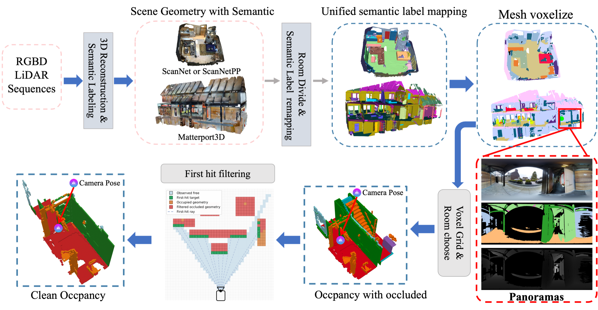
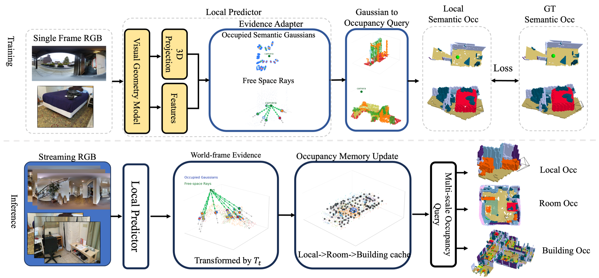
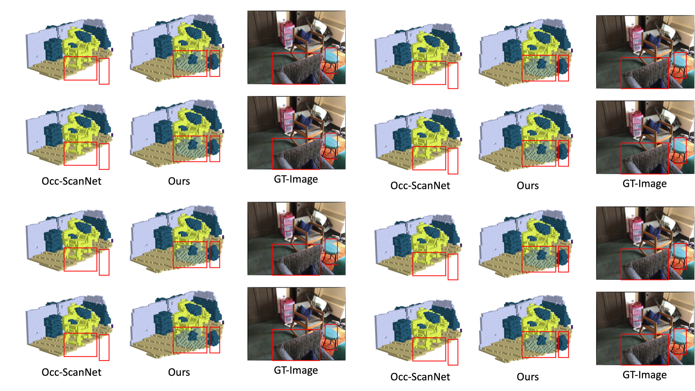
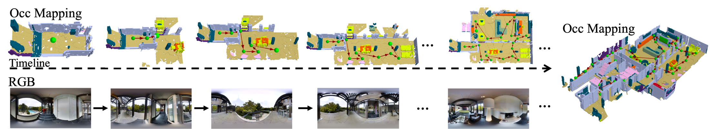
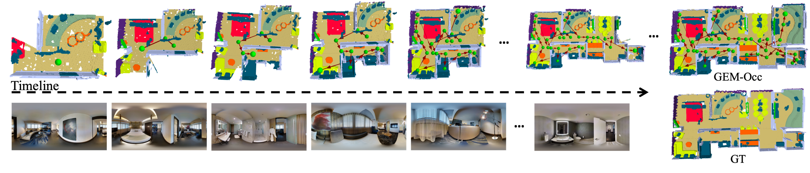

Semantic occupancy provides a structured spatial memory for embodied indoor agents by jointly representing occupied regions, observed free space, unknown areas, and object semantics. However, existing indoor occupancy benchmarks and methods mainly focus on single-view prediction or room-level online perception, leaving long-horizon semantic mapping across connected indoor spaces underexplored.
We introduce HI-Occ, a hierarchical indoor occupancy benchmark that unifies ScanNet, ScanNet++, and Matterport3D under a common sparse semantic occupancy format while preserving their native observation geometries, including perspective RGB-D frames and pano-centric observation groups. HI-Occ supports local semantic occupancy prediction, room-level online occupancy mapping, and building-level mapping across connected panoramic environments.
We further propose GEM-Occ, a Gaussian Evidence Memory framework for semantic occupancy mapping. Rather than using pointmaps as persistent map states, GEM-Occ treats local visual geometry predictions as transient evidence, converts them into semantic Gaussian occupancy evidence and free-space ray evidence, and fuses them into a persistent hierarchical memory through visibility- and uncertainty-aware causal updates.

HI-Occ aligns ScanNet, ScanNet++, and Matterport3D into a shared sparse semantic occupancy representation while keeping each dataset's native observation geometry.

GEM-Occ converts local visual geometry predictions into semantic Gaussian occupancy evidence and explicit free-space ray evidence, then updates local caches, room submaps, and a building-level graph.



GEM-Occ improves local occupancy prediction, online map stability, free-space reasoning, revisit consistency, and building-level scalability.
@misc{zhu2026gemoccvisualgeometryevidence,
title = {GEM-Occ: From Visual Geometry Evidence to Embodied Semantic Occupancy Memory},
author = {Hu Zhu and Bohan Li and Xianda Guo and Hongsi Liu and Baorui Peng and Mingqi Yuan and Xin Jin and Wenjun Zeng and Chang Wen Chen},
year = {2026},
eprint = {2607.05543},
archivePrefix = {arXiv},
primaryClass = {cs.RO},
url = {https://arxiv.org/abs/2607.05543}
}